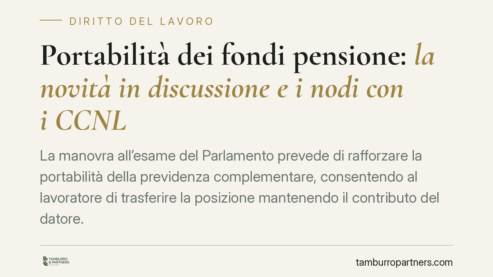

Portabilità dei fondi pensione: la novità in discussione e i nodi con i CCNL
La manovra all'esame del Parlamento prevede di rafforzare la portabilità della previdenza complementare, consentendo al lavoratore di trasferire la posizione mantenendo il contributo del datore. La misura è contestata da imprese e sindacati e alcuni CCNL pongono limiti. Finché il testo non è definitivo, parliamo di una norma in iter, da verificare nei contenuti e nella decorrenza.

Di cosa si parla
Il dibattito sulla previdenza complementare ruota attorno a una proposta contenuta nella legge di bilancio in discussione: estendere la cosiddetta portabilità della posizione previdenziale, permettendo al lavoratore iscritto a un fondo di categoria di trasferire i propri contributi a un altro fondo conservando il contributo versato dal datore di lavoro.
Precisazione doverosa: si tratta di una misura in corso di iter parlamentare. Al momento della redazione non risultano confermati in via definitiva né il testo finale, né i riferimenti di legge puntuali (numero, articolo, commi), né una data certa di decorrenza. Eviteremo quindi di indicare scadenze secche: le forniremo quando la norma sarà pubblicata in Gazzetta Ufficiale.
Inquadramento normativo
Il trasferimento della posizione tra fondi non è una novità assoluta. L'art. 14 del D.lgs. 5 dicembre 2005, n. 252 (disciplina delle forme pensionistiche complementari) già oggi regola le ipotesi di trasferimento della posizione individuale. In particolare, consente al lavoratore di trasferire la propria posizione ad altra forma pensionistica decorso un periodo minimo di permanenza (ordinariamente fissato in due anni), oltre alle ipotesi legate alla cessazione dei requisiti di partecipazione.
Il punto è un altro. Ciò che oggi il lavoratore può trasferire è, in sostanza, la propria posizione, comprensiva di quanto maturato. La novità in discussione riguarderebbe invece la portabilità del contributo datoriale: cioè la possibilità di mantenere il versamento a carico dell'azienda anche verso un fondo diverso da quello previsto dalla contrattazione collettiva.
Qui si apre il vero nodo giuridico: può una norma di legge imporre al datore un obbligo contributivo verso un fondo non previsto dal CCNL? Il contributo datoriale, infatti, nasce tipicamente dall'autonomia collettiva, che lo àncora a uno specifico fondo di categoria (per i metalmeccanici, ad esempio, Fondo Cometa). Il coordinamento tra la fonte legale e la fonte contrattuale è il terreno su cui si gioca la tenuta della misura.
Perché è contestata
Confindustria e le organizzazioni sindacali (Cgil, Cisl, Uil) hanno espresso riserve. Dal lato datoriale si teme un obbligo contributivo svincolato dalle intese di categoria; dal lato sindacale si guarda alla possibile erosione dei fondi negoziali, costruiti sulla logica della contrattazione.
Alcuni contratti collettivi, come quello dei metalmeccanici, prevedono condizioni e limiti alla destinazione del contributo aziendale. Se la legge andasse in direzione diversa, è prevedibile un contenzioso sul rapporto tra autonomia collettiva e prescrizione legislativa, con possibile intervento interpretativo della COVIP, autorità di vigilanza sui fondi pensione.
Implicazioni pratiche
Per il lavoratore iscritto a un fondo di categoria, la prospettiva è una maggiore libertà di scelta. Ma attenzione: finché il testo non è legge, nulla cambia rispetto al quadro attuale, regolato dall'art. 14 D.lgs. 252/2005 e dal proprio CCNL.
Per le imprese, la questione è di governance del costo del lavoro e di gestione dei rapporti con i fondi negoziali. Conviene monitorare l'iter e verificare le clausole del contratto applicato prima di assumere decisioni.
Cosa fare in concreto
- Verificate il vostro CCNL: controllate le clausole su fondo di destinazione, contributo datoriale e condizioni di permanenza.
- Non anticipate decisioni: finché la norma non è pubblicata, continuate ad applicare le regole vigenti dell'art. 14 D.lgs. 252/2005.
- Richiedete alla COVIP e al vostro fondo informazioni aggiornate sulle condizioni di trasferimento oggi applicabili.
- Datori di lavoro: mappate l'impatto economico di un eventuale obbligo di portabilità del contributo e aggiornate le procedure HR.
- In caso di dubbio sul coordinamento tra legge e contratto, consigliamo di acquisire un parere prima di modificare versamenti o adesioni.
---
Contributo informativo a cura di Tamburro & Partners Avvocati - Avv. Giuseppe Tamburro. Non costituisce parere legale.
Ogni storia di lavoro ha i suoi tempi.
Se gestisci HR e vuoi un confronto su contenzioso, ispezioni o licenziamenti, scrivi allo studio. Ti rispondiamo entro un giorno lavorativo.